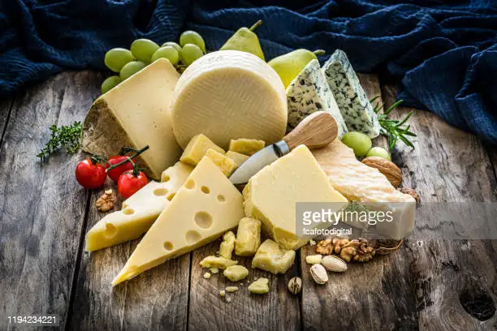

productos de excelencia
regala momentos
regala sabores
Cómo nace Vía Porcari
nuestra-historia
Nació en la ciudad de Mar del Plata en el año 2005, inspirada en los sabores gastronómicos de un pequeño pueblo italiano ubicado en la Toscana, provincia de Lucca, de nombre Porcari.
- jamon
- embutidos
- camenbert
- lomo
| Salame |
Salame
De Cerdo / Tipo Criollo / Tipo Fino / Con peperoni / Tipo Chacarero / De Cerdo a las Finas Hierbas
salchichas |
Salchichas
Ahumadas (largas – cortas) / Tipo Húngaras Ahumadas / Copetín Ahumadas / Rosca Polaca
varios |
Varios
Morcillon con lengua / Pechito de Cerdo ahumado / Pechuga de Pavo / Pastrón / Salchichón Ahumado
azul |
Azul
Nacional / Importado
ahumados |
Ahumados
Barra/ Tranza
brie |
Brie
Nacional / Francés / Brie con Azul Francés
Burrata / Boconccino
Burrata / Boconccino
camembert |
Camembert
Nacional / Francés
cheddar |
Cheddar
Nacional / Cheddar madurado Inglés
crema |
Crema
Nacional / Philadelphia / Mascarpone
cuartirolo |
Cuartirolo
Clásico / Con fécula
duros |
Duros
Provoleta / Provolone / Parmesano / Reggianito
especiales |
Especiales
Reblochón / Raclette / Colonia / Morbier / Atuel / Halloumi / Queso de cabra / Feta / Canestrato
mozzarella |
Mozzarella
Clásica / Hilada
Port Salut
Port Salut
Clásico / Sin sal
Ir a Google
